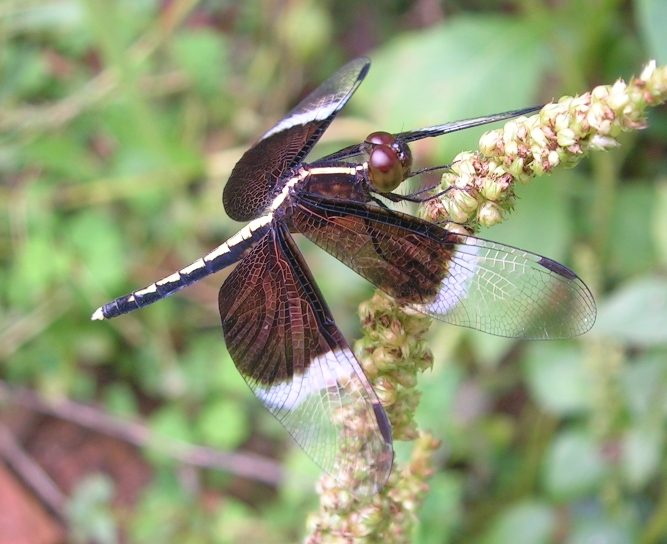

चितकबरी धान पतंगीPied Paddy Skimmer
Neurothemis tullia · Libellulidae · INS-0079

- Scientific name
- Neurothemis tullia (Drury, 1773)
- Family
- Libellulidae
- Hindi
- चितकबरी धान पतंगी
- Local names
- pied paddy skimmer, dhan ki patangi, chitkabri patangi, paddy dragonfly
- Status here
- native
- IUCN
- not evaluated
- Review
- audited and independently read
When to look कब देखें
Present all year.
Uses and possibilities उपयोग और संभावनाएँ
Drawn from the documented uses in the profile below, where each is labelled traditional, current or a research lead. All uses →
पाई चावल की नीलकंठी / Pied Paddy Skimmer
Neurothemis tullia (Drury, 1773) — Libellulidae
पाई चावल की नीलकंठी — बस्ती के सभी चावल के खेतों, तालाबों और सिंचाई नहरों के आसपास पाई जाने वाली एक अत्यंत सामान्य, मध्यम आकार की काली और सफ़ेद व्याधपतंग (dragonfly) है। इसका नाम "पाई" (pied, अर्थात दो-रंगी) इसलिए है क्योंकि यह काली और सफ़ेद चोटियों वाली होती है। नर का शरीर काला होता है जिस पर सफ़ेद धब्बे होते हैं, जबकि मादा का रंग पीला-भूरा होता है। यह व्याधपतंग अत्यंत तेज़ी से चावल के खेत से कीड़े पकड़ती है — मच्छरों, छोटे पतंगों और पत्ती-मोड़ने वाले कीड़ों को। यह किसानों का एक बहुत महत्वपूर्ण दोस्त कीट है। इसकी उपस्थिति स्वच्छ पानी की निशानी है।
Quick Identification त्वरित पहचान
| Feature | Description |
|---|---|
| Size | Medium-sized dragonfly; body length 32–40 mm; wingspan 50–65 mm |
| Male Colour | Black abdomen with prominent white spots or patches on the middle segments; black thorax with white markings |
| Female Colour | Yellow-brown or dull olive abdomen with darker markings |
| Wings | Transparent with dark basal patches; females may have darkened wings |
| Behaviour | Perches on low twigs and vegetation near water; actively hunts in open spaces; males are highly territorial |
| Flight | Swift, direct, and hovering flight; hunts close to water surface |
Field tip: Look for medium-sized dragonflies with distinctive black (males) or yellow-brown (females) abdomens with white or pale markings, perching and hunting near rice paddies and shallow water bodies. The patterned abdomen and association with rice fields identify the Pied Paddy Skimmer.
Morphology आकारिकी
Biometrics (typical measurements in the northern Indian plains):
| Measurement | Range |
|---|---|
| Body length | 32–40 mm |
| Hindwing length | 22–28 mm |
| Wingspan | 50–65 mm |
Adult Male Description: The male has a predominantly black body (thorax and abdomen) with prominent white or pale yellow spots and patches on the abdominal segments (particularly segments 3–7). The thorax is black with white markings on the sides. The wings are transparent with dark patches at the base of the hindwings.
Adult Female Description: The female is duller and more variable. The thorax is yellowish-brown or olive, and the abdomen is yellow-brown or greenish-brown with darker markings. The wings are often more darkened than in males, particularly on the hindwings.
Vocalisations
Odonates do not possess vocal organs and cannot produce true vocalisations.
- Sound production: Wing-whirring sounds are produced by rapid wingbeats during territorial disputes, pursuit of prey, or courtship maneuvers. The wing-beat frequency is approximately 30–35 Hz.
Behaviour & Ecology व्यवहार और पारिस्थितिकी
Territorial paddy-field predator. The Pied Paddy Skimmer is a swift, aggressive hunter that patrols rice paddies, shallow ponds, and irrigation channels. Males are highly territorial and perch on low vegetation, stems, or stones near the water edge. They rapidly chase away rival males and pursue flying insects. Females are less territorial and spend more time egg-laying. This dragonfly hunts a wide variety of small flying insects, including mosquitoes, small moths, midges, and other flying insects found over water.
Water quality indicator. Neurothemis tullia is tolerant of slightly degraded and shallow water bodies, making it an excellent indicator of rice-farming ecosystems. Its presence indicates active rice cultivation and functioning paddy systems.
Larval (Naiad) Stage
The larval stage is aquatic, and the naiads are highly predatory:
- Body form: The naiad is stout and robust, with a flattened body form adapted for living in mud and shallow water. It has large compound eyes and powerful jaws (mandibles) for capturing prey.
- Habitat and behavior: Naiads live in the muddy substrates of rice paddies and shallow pond bottoms. They are sit-and-wait predators, lying motionless in the mud until prey approaches, then striking with their extensible lower lip (labium).
- Duration: The larval stage lasts approximately 8–12 weeks, depending on temperature.
- Emergence: Upon reaching maturity, the naiad climbs onto an emergent stem or stone at night, sheds its skin, and the adult emerges at dawn.
Life Cycle / Phenology जीवन चक्र
| Stage / Season | Event |
|---|---|
| Egg | Laid by the female dipping her abdomen into water while flying, usually over rice paddies or shallow water |
| Larva (Naiad) | Mud-dwelling predator; 8–12 weeks duration; tolerant of slightly degraded water and organic mud |
| Emergence | Peak emergence from July to September during the wet monsoon and early post-monsoon seasons |
| Adult | Present year-round; peak activity during the monsoon and post-monsoon (June–November); lifespan 4–6 weeks |
Host Plants or Prey आहार
Prey (adults):
- Mosquitoes (Culex, Anopheles, Aedes species)
- Small midges and gnats (Ceratopogonidae, Chironomidae)
- Small moths and butterflies
- Leafroller and stem-borer insects (Cnaphalocrosis, Scirpophaga)
- Other small flying insects
Prey (larvae/naiads):
- Mosquito larvae (wigglers)
- Small aquatic insects (water beetles, backswimmers)
- Chironomid worm larvae (bloodworms)
- Small crustaceans and copepods
Predators / Natural Enemies शत्रु
- Birds: Insectivorous birds like drongos, rollers, bee-eaters, and cormorants.
- Amphibians: Large tree frogs and pond frogs prey on emerging adults and final-instar naiads.
- Aquatic insects: Larger dragonfly naiads and predatory water bugs prey on smaller naiads.
- Spiders: Crab spiders on vegetation near water.
Agricultural / Human Relevance कृषि प्रासंगिकता
Rice paddy pest suppressor. The Pied Paddy Skimmer is highly beneficial in rice-growing tracts where it preys heavily on mosquitoes (disease vectors), leaf-roller moths, stem-borer moths, and other rice pests. The adults hunt swiftly over paddies, and the aquatic naiads prey on mosquito larvae in the water. They adapt well to farm ponds, irrigation canals, and rice paddies, acting as a natural pest-suppressive force in agricultural fields without any chemical inputs required.
Biological indicator. The presence and abundance of Pied Paddy Skimmers indicate functioning rice-cultivation systems and water body health. Their near-absence may indicate overuse of insecticides or poor water quality management.
Expected Locally स्थानीय रूप से अपेक्षित
Not a field record. Written from published accounts for eastern Uttar Pradesh. No confirmed local sighting yet — if you have seen it, that is what the atlas needs.
अभी तक स्थानीय पुष्टि नहीं। यह विवरण प्रकाशित स्रोतों से है, किसी अवलोकन से नहीं।
This species is to be expected throughout Basti district in rice paddies (dhaan ke khet), irrigation canals, and shallow ponds, particularly during the monsoon and post-monsoon seasons (June–October). Males are territorial and easily observed perching on low vegetation near water. Look for black-and-white males or yellowish females hunting over water with swift, darting flights. This species is present year-round with peak activity during the monsoon. The first local record would be a photograph with place and date; send it to the atlas contact on the About page.
Distribution वितरण
Global range: South, East, and Southeast Asia, from the Indian subcontinent through Myanmar, Thailand, China, and Indonesia.
In India: Widespread in plains and agricultural regions, particularly in rice-growing areas.
In Uttar Pradesh: Abundant resident in all rice-growing districts, particularly in the eastern plains.
In Basti district / eastern UP: Expected in all rice-growing blocks and wetland areas. Will be found wherever rice paddies with water and shallow drainage systems exist.
Research Questions शोध प्रश्न
Anyone can investigate these | कोई भी इन प्रश्नों की जाँच कर सकता है
- What is the abundance of Pied Paddy Skimmers in organic rice paddies versus chemically treated paddies in Basti? / क्या जैविक (organic) चावल के खेतों में रासायनिक खेतों की तुलना में ज़्यादा नीलकंठी होती हैं? — Conduct field surveys in both types of paddies.
- How many mosquito larvae does a single Pied Paddy Skimmer naiad consume during its larval development? — Conduct rearing trials in controlled containers with measured prey.
- Can the presence and abundance of Pied Paddy Skimmers be used as an indicator of pesticide residue levels in paddy water? — Correlate dragonfly abundance with chemical analysis of water samples.
- What is the water quality requirement for Pied Paddy Skimmer larval survival? — Test naiad survival in water of different pH, dissolved oxygen, and organic content levels.
- How many rice-field insects are consumed by adult Pied Paddy Skimmers in Basti rice paddies during one growing season? — Estimate predation rates and compare with chemical insecticide applications.
Similar Species मिलती-जुलती प्रजातियाँ
| Species | How to tell apart | हिंदी |
|---|---|---|
| Scarlet Skimmer (Crocothemis servilia) | Brilliant scarlet-red male (not black and white); yellow-brown female lacks white markings; larger | सिंदूरी व्याधपतंग — चमकीला लाल |
| Slender Skimmer (Orthetrum sabina) | Slender blue male abdomen; much smaller; different habitat preference | पतली व्याधपतंग — नीला, छोटा |
| Crimson Marsh Glider (Trithemis aurora) | Bright red or crimson male; different body shape and markings | लाल दलदली व्याधपतंग — लाल |
Field rule: A medium-sized dragonfly with black abdomen marked with white patches (male) or yellowish-brown abdomen (female), found hunting over rice paddies and shallow water, is the Pied Paddy Skimmer.
Taxonomy & Classification वर्गीकरण
Original description. Drury described the Pied Paddy Skimmer as Libellula tullia in 1773. The species was later moved to the genus Neurothemis, which contains related Asian skimmer dragonflies.
Subspecies. The nominate subspecies N. t. tullia occurs throughout Asia.
Family and order placement. Order Odonata, family Libellulidae (skimmer dragonflies).
Phylogenetic notes. Neurothemis is a genus of Asian libellulid dragonflies, closely related to other skimmers and characterized by adaptations to shallow-water habitats and agricultural ecosystems.
IUCN status rationale. Not evaluated. Common and widespread in rice-growing regions, under no conservation threat.
Photo Gallery फोटो गैलरी
No photos yet — add field photos to media/species/pied_paddy_skimmer/ and run node scripts/sync_photos.js.
Photos needed आवश्यक फोटो
- [ ] Adult male perching on rice stem (नर चावल की पत्ती पर)
- [ ] Adult female on vegetation (मादा)
- [ ] Adult in flight over paddy (उड़ान में)
- [ ] Naiad in mud from paddy (कीचड़ में लार्वा)
References संदर्भ
- Drury, D. (1773). Illustrations of Natural History, Vol. 1. London.
- Mitra, T.R. (1991). Odonata fauna of eastern India with special reference to Assam. Records of the Zoological Survey of India 89: 1–237.
- Subramanian, K.A. (2005). Dragonflies and damselflies of Peninsular India — A photographic guide. Project Tiger, WWF-India, New Delhi.
- Kalkman, V.J. et al. (2008). Global diversity of dragonflies (Odonata) in freshwater. Hydrobiologia 595(1): 351–363.
- ZSI Checklist — Odonata of Uttar Pradesh (2015).
- GBIF Occurrence Data — Neurothemis tullia, Uttar Pradesh (2010–2025).
Source file: species/fauna/insects/pied_paddy_skimmer.md